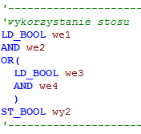

Główna
Języki tekstowe
Języki grafczne
Norma IEC 61131
Języki tekstowe
- Structured Text(ST) znany też jako Structural Text.
Język wysokiego poziomu stworzony na bazie takich języków jak: C++ czy Pascal. Stworzony głownie dla informatyków czy programistów aby w łatwy sposób mogli programować sterowniki PLC. Występują w nim pętle while czy for.

Przykładowy prgram w języku ST
- Instruction List (IL)
Język niskiego poziomu bazowany na języku Assembler. Również stworzony głownie dla informatyków bądź programistów ale też elektroników. Często stosowany do programowania mikrokontrolerów jednoukładowych.
Przykładowy program w jezyku IL